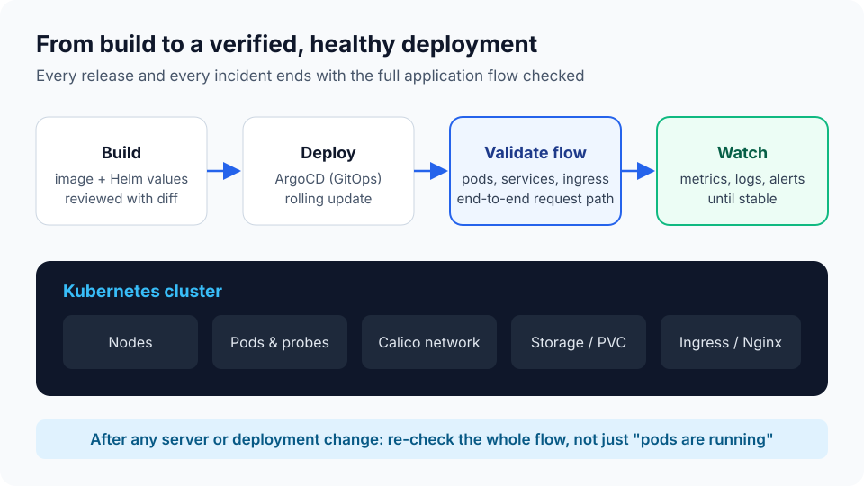

Kubernetes · Deployments
Production Kubernetes & release validation
Every release and every incident ends with the whole application flow verified.
Problem
After a build, a server change or an outage, "pods are running" did not always mean the application actually worked end to end.
What I do
Deploy with ArgoCD and Helm, then validate the full flow: pods and probes, services, ingress and the real request path. Troubleshoot networking (Calico), storage and resource limits, and document fixes as reusable runbooks.
Result
Releases and recoveries are confirmed working for users, not just started, and repeat issues are fixed once for the whole team.
KubernetesArgoCDHelmCalicoAzure AKSNginx ingress
